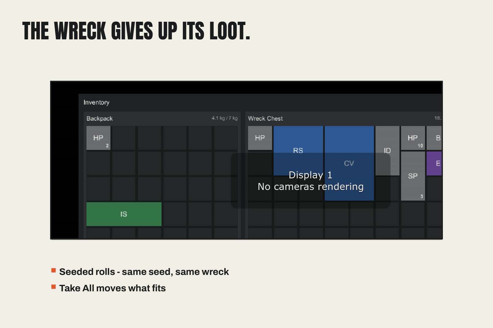
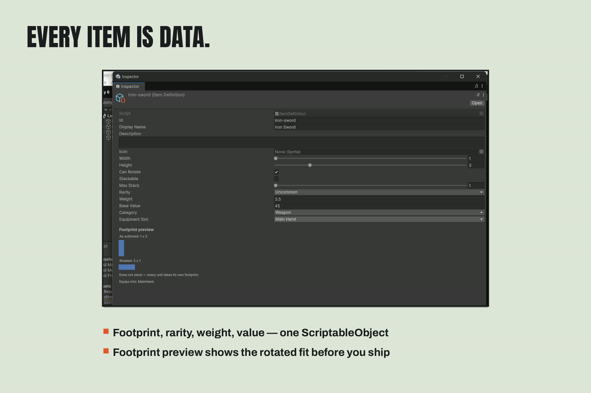
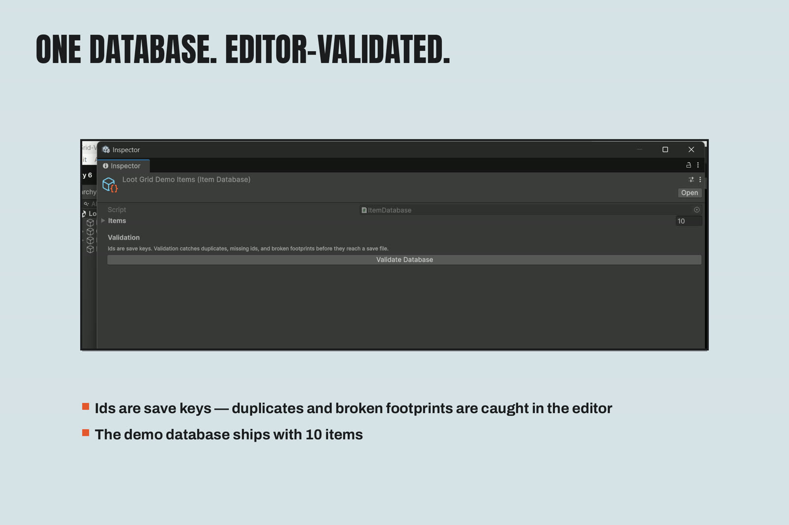
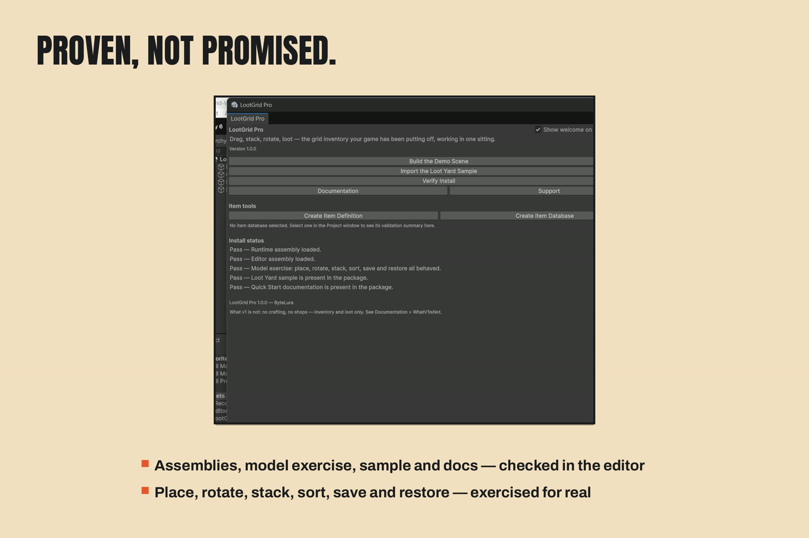

LootGrid Pro
A spatial grid inventory for Unity.
LootGrid Pro is a spatial grid inventory for Unity: items occupy real width × height footprints on a grid, rotate 90°, stack, split, and move between containers by drag-and-drop or click-to-move, under per-container weight limits.

What it does
- The grid model —
InventoryGridwith footprints, rotation, first-fit placement, stacking/splitting, auto-sort (size / rarity / name) and auto-stack. Item totals are conserved on every mutating path; a sort that cannot fit is refused and the layout is kept. - Containers — one
InventoryContainercomponent per backpack, chest or stash: size, weight limit (0 = unlimited), starter items. - Items — ScriptableObject definitions: stable Id (the save key), footprint, rotation permission, stacking and max stack, rarity, weight, base value, category, equipment slot.
- The screen — the complete in-game UI builds from one call,
InventoryScreenView.Build(...): window, container panels with live weight readouts and Sort/Stack buttons, the equipment doll, drag layer and status line. No prefabs, no scene wiring. - Equipment doll — eight slots with swap-safe equip/unequip, as a separate module with its own save block. Remove it and the grid core is untouched.
- Saves — container and equipment state captures to plain serializable DTOs or JSON and restores defensively (unknown or outgrown items are skipped with named warnings).
- Loot — weighted loot tables roll which defined items arrive, in what counts. Seeded generation: the same seed gives the same loot.
Scope
Tested on Unity 6000.5.4f1 and Unity 2022.3.22f1. No package dependencies. Version 1 is inventory and loot only — the Honest Limits page states plainly what v1 is not.
Screenshots




Start here
New to the package: the Quick Start runs the demo in about two minutes, then walks through defining items, placing containers and building the screen in your own game. The Loot Yard demo guide tours the sample scene feature by feature.
Support
Support: bytelura@gmail.com — see the Support page for what to include. Running into a problem first: Troubleshooting starts with Verify Install, which diagnoses most issues in one run.